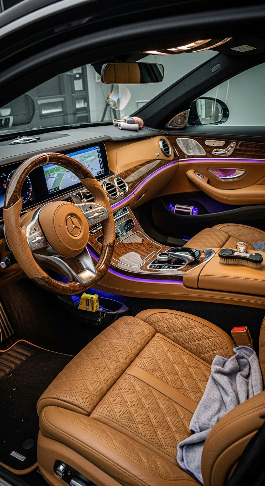

<section class="gallery">
  <h2>Before & After Transformations</h2>

  <!-- Normal Gallery -->
  <div class="gallery-grid">
    
    
    
  </div>

  <!-- Before After Slider -->
  <div class="before-after">
    
    
  </div>
</section>
